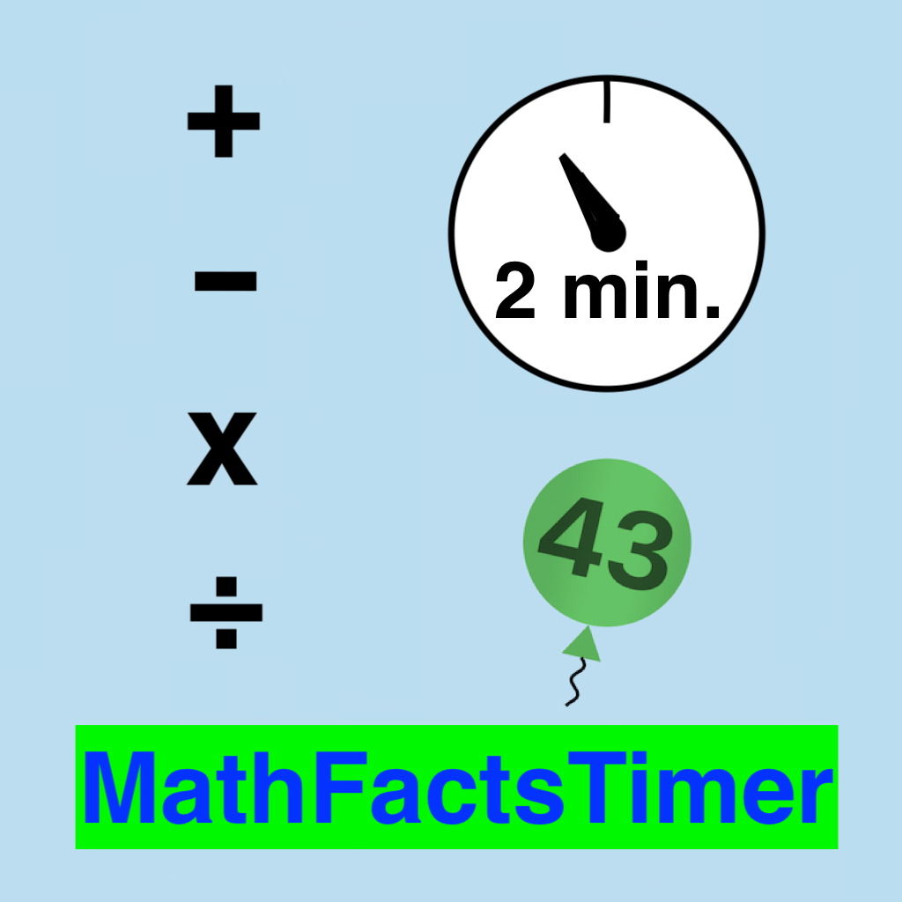

 Math Facts Timer
Privacy Policy
The developer does not collect any data from this app.
Description
This is a simple rapid-fire math drill with a two-minute timer. There is no sound. The app is free.
No Wi-Fi or cell signal is required.
The problem types are addition, subtraction, multiplication and division.
At the end of two minutes, the number of correct and incorrect answers is displayed,
along with the best correct thus far. Twelve values are stored for future sessions:
one for each of the 4 operations and 3 levels.
On a settings page (for adults but with no restrictions) children may be added by name and assigned
a level 1 - 3. The name, level, chosen operation and 12 best-correct values are stored on your device
for future sessions.
Instructions for the Adult
On first running the app, there is the option of adding a child's name. One the home page the wheel at the bottom
opens a settings page. Here children can be added or deleted. There are 3 levels of increasing difficulty,
and a level can be chosen for the current child. The clear-settings button sets the number of correct answers
to zero (for all operations and levels) and the level to 1 for the current child.
The operation is set to "add", and all best-correct values are set to zero.
There is no penalty for incorrect answers.
A picker on the home page allows selection of a child's name. It defaults to the last child playing.
There is no automatic progression between levels -- the settings page must be used.
Instructions for the Child
On the home page, choose your name if it's not already selected, or have an adult add your name.
Click the green "Go" button, and on the next page click the "Start" button. Click one of the 5 buttons to answer.
New problems will immediately pop up until 2 minutes is up.
At the end of 2 minutes, the number of correct, number of incorrect and your number-correct
previous best will be displayed. If the number of correct answers if greater than zero,
a ballopn animation will be displayed. If you set a new record, a larger
balloon will float up with an invitation to pop it by clicking on it.
The "back" button at the top returns you to the home page.
This page was last updated February 7, 2026. The developer may be contacted at pdyerr icloud com.